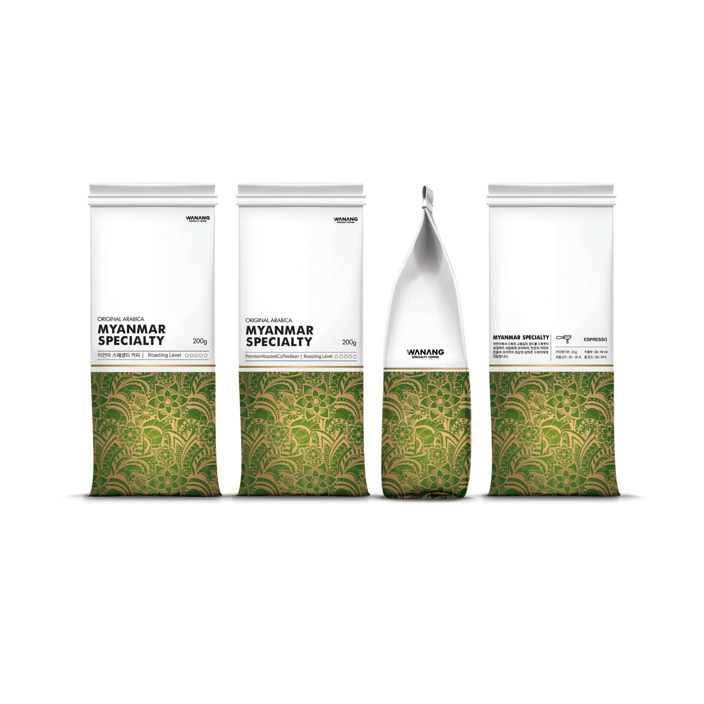

- 

ASIA SPECIALTY COFFEE BEAN
MYANMAR SPECIALTY
ORIGINAL ARABICA
COUNTRYMyanmar
FarmWN Pyin Oo Lwin
enVIROMENTSpecialty Level
PRICE55 USD
DESCRIPTION
미얀마 중북부 지역의 고산지대인 핀울린 지역에 위치한 WN 커피농장.
최상급 아라비카 원두가 생육되기 최적화된 지역으로, 커피생두와 농산물 모두 신선하다.
WN Coffee Farm in Pyin Oo Lwin, a high-altitude area in central Myanmar.
Optimized for growing the finest Arabica beans, fresh coffee beans and fresh produce.
ROASTING POINT
- Medium
- Medium City
Brewing
- Hand Drip
- Espresso Machine
Grinding
- Medium for Hand Drip
- Fine for Espresso Machine
ASIA SPECIALTY COFFEE BEAN
WANANG 커피는 아시아의 스페셜티 커피를 재배하기 위한 직영 농장을 운영합니다.
아라비카 생두가 자랄 수 있는 최상의 재배환경에서 콜드체인 시스템 하에 농사와 수확, 워싱 프로세스, 그리고 각 소비국가의 도달할 때 까지 세심한 관리를 실시하고 있습니다.
WANANG Coffee operates a direct farm to grow specialty coffee in Asia.
In the best cultivation environment where Arabica beans can grow, we carefully manage the farming, harvesting, washing and delivery to each country under the cold chain system.
ARABICA FARM DEVELOPMENT
각 아시아의 국가의 고산지대 기후와 수질, 토질 환경을 분석합니다. 농자의 지형에 맞게 농장을 설계하고 농장별로 가장 건강한 종자를 선정합니다. 농장은 친환경적으로 설계되며 농부의 안락한 삶은 물론, 고객들의 즐거운 팜 스테이를 고려하여 만들어집니다.
Analyze the highland climate, and environment of each Asian country. The healthiest seeds for each farm is selected. The farm is designed to be Eco friendly and is built taking into account the comfort of the farmer and the pleasant farm stays of our customers.
High quality small quantity production
WANANG은 고품질을 지향합니다. 각국의 농부들은 한 알의 귀중한 아라비카 생두를 얻어내기 위해 모든 생육 과정에서 정성을 다하여 관리합니다. 고품질 소량생산을 유지하여 최상의 커피 가치를 만들기 위해, 우리는 열정을 다하고 있습니다.
WANANG aims for high quality. Farmers take care of every step of the way to obtain a valuable arabica green bean. We are passionate about maintaining high quality, low volume production to create the best specialty coffee quality.